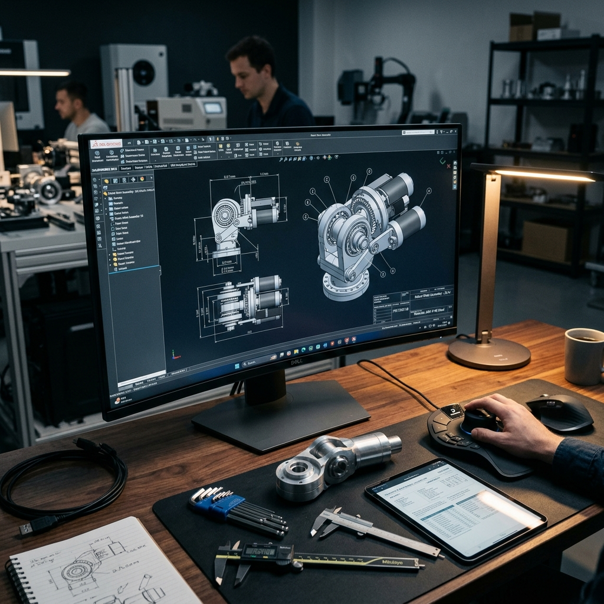
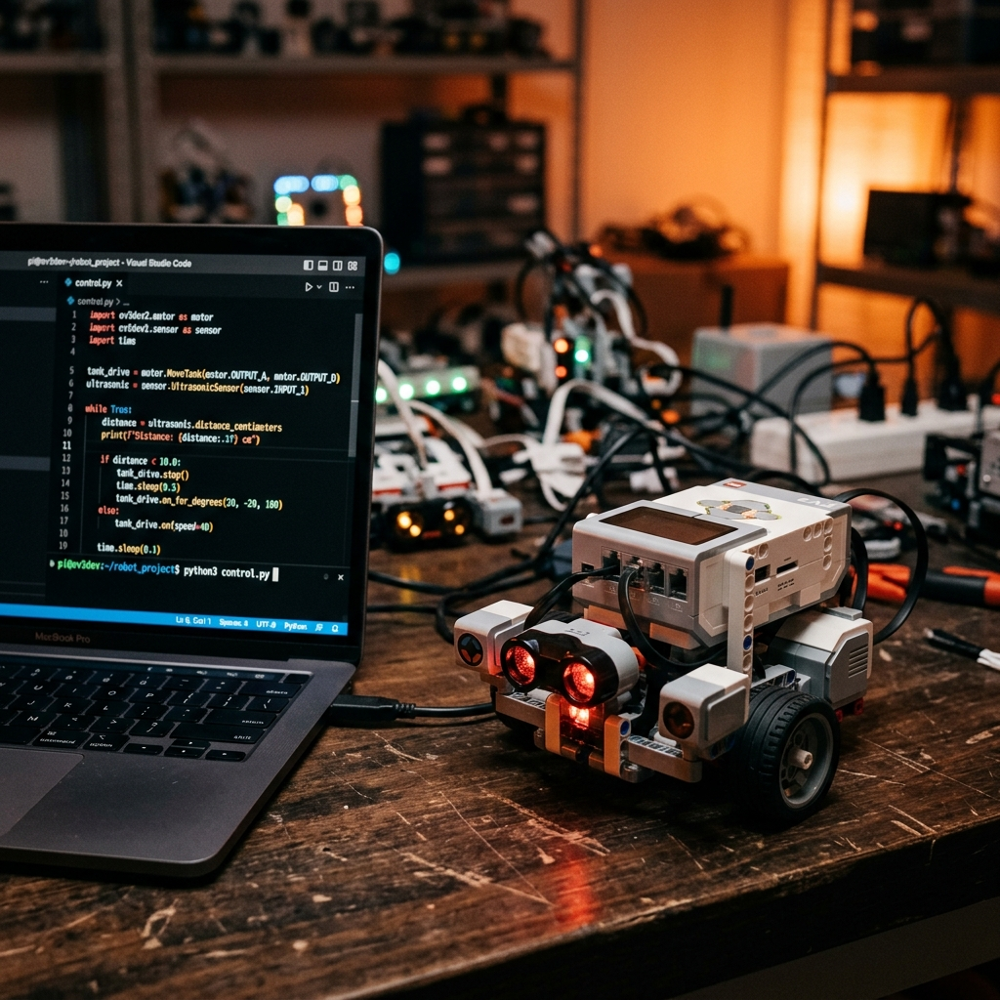
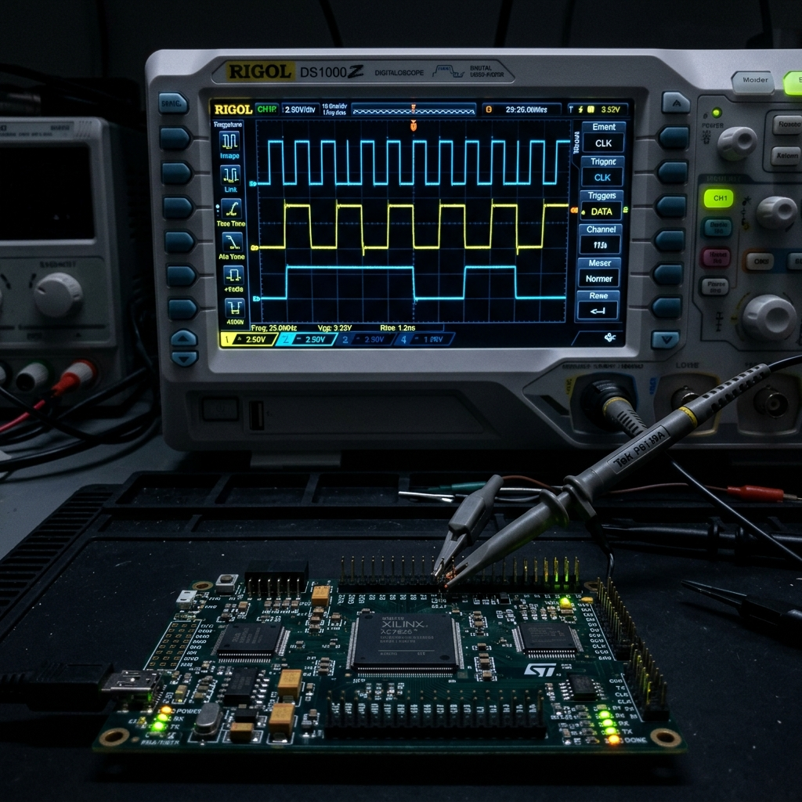
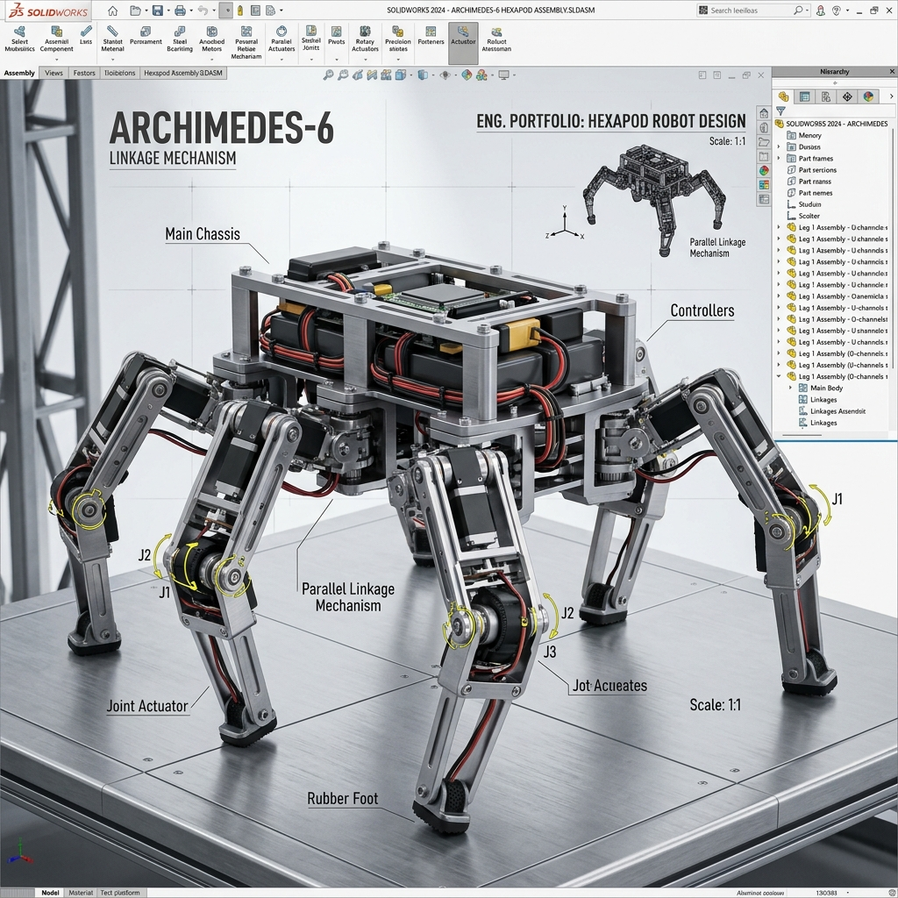
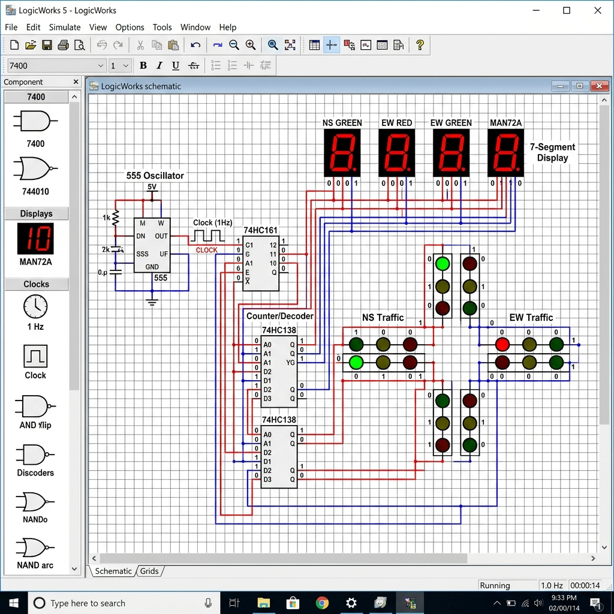
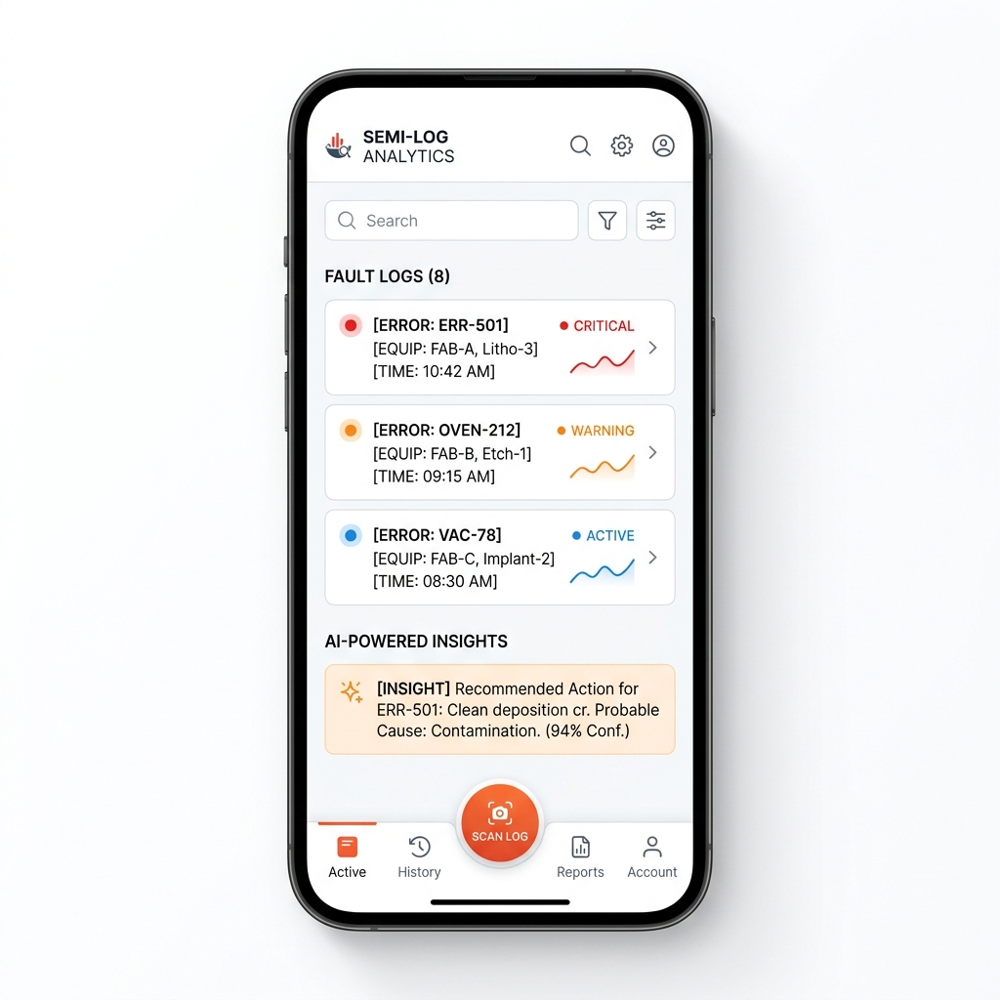

COMMUNICATION
동양미래대 로봇자동화공학부 출신으로, 기구 설계 실무와 AI/DT 역량을 결합하여
반도체 장비의 가동률을 극대화하는 하이브리드 엔진지어 장민석입니다.
반도체 유지보수 직무에 최적화된 하드웨어/소프트웨어 융합 역량

AutoCAD와 SolidWorks를 활용해 KS 기계제도 규격에 맞춘 요소 부품 도면을 설계합니다. 12주차 축(Shaft) 도면 작성 프로젝트를 통해 장비 부품의 공차 및 치수 분석력을 길렀으며, 기구적 결함을 신속히 파악할 수 있습니다.

Python을 이용해 EV3 로봇의 초음파, 자이로, 컬러 센서와 모터를 제어하는 프로그래밍을 수행했습니다. 자동화 장비의 제어 흐름을 읽고 로직을 최적화하는 데 강점이 있습니다.

디지털논리회로의 플립플롭(Flip-flop) 실험과 전자회로 실습을 통해 하드웨어 제어 로직을 습득했습니다. OrCAD와 PSpice를 활용한 전원공급장치 제작 경험을 바탕으로 전기 신호를 분석합니다.
STAR-R 프레임워크로 구조화된 실무 프로젝트 포트폴리오

TRIZ 발명 원리와 특허 검색 데이터를 적용한 링크 메커니즘 로봇

플립플롭을 이용한 시퀀스 동작 동기 순차논리회로 설계 및 검증
명확한 규약과 소통 채널 구축을 통한 프로젝트 효율 극대화

AppSheet & Gemini API를 연동한 현장 점검 지능화 솔루션
단순 구현을 넘어선 시스템 지휘자(Architect)
# 🚀 Vibe Coding Manifest
본 포트폴리오는 수작업이 아닌, 명확한 설계 의도(Logic of Intent)를 바탕으로 AI 에이전트(Antigravity)를 지휘하는 Vibe Coding 기법으로 구축되었습니다.
# 📋 IAFA Architecture
# 💡 실무 적용 계획
입사 후 반도체 장비의 에러 로그(Log) 이미지를 텍스트로 자동 변환하고 분석하는 자동화 앱(AppSheet 연동)을 개발하여 업무 효율을 극대화하는 하이브리드 DT 엔지니어가 되겠습니다.
Antigravity 에이전트를 통한 Vibe Coding
실시간 데이터베이스 및 호스팅
광학 문자 인식 자동화 경험
에러 로그 분석 앱 개발 계획
장민석 지원자는 P.A.C.E 인재상에 부합하는 하이브리드 DT 엔지니어로서,
반도체 장비 유지보수의 디지털 혁신을 선도하겠습니다.